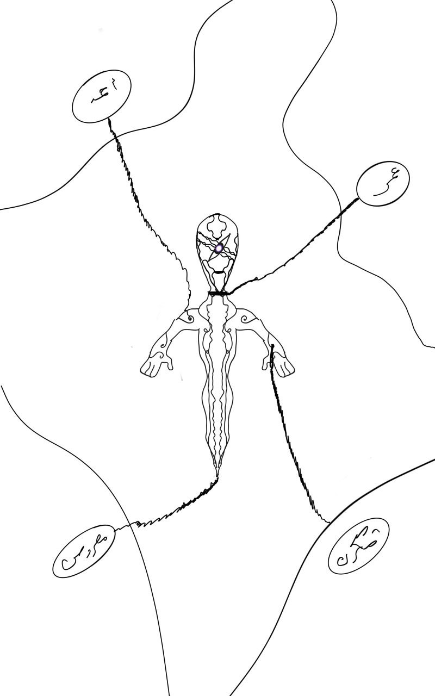
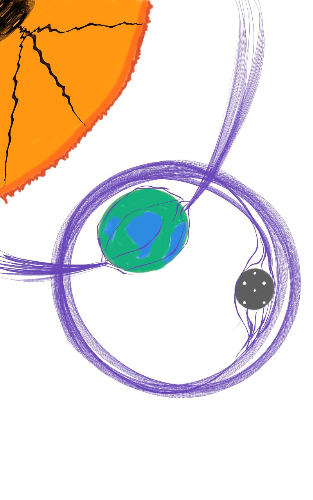
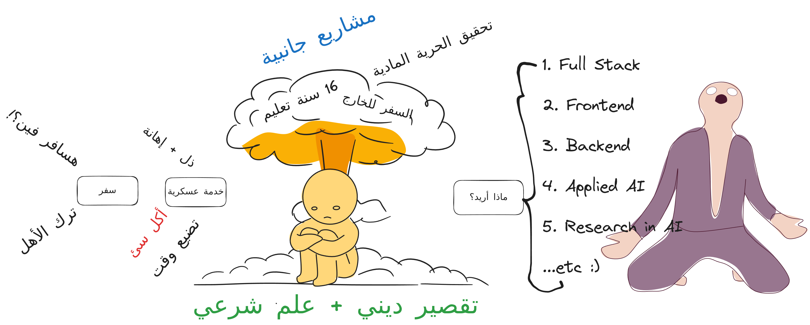
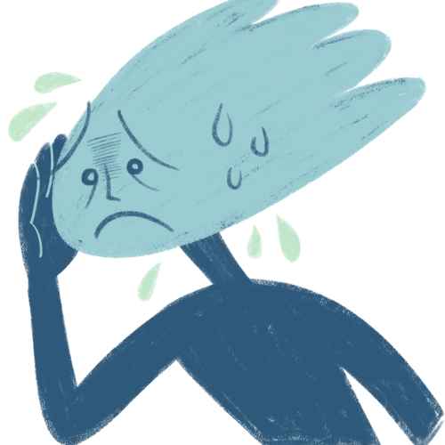

جاذبية مزيفة و عالم مخادع
البداية
أحد الممارسات التي أقوم بها في بعض الأحيان هي مراقبة مصادر الأفكار التي تأتيني والمحفزات لها وتتبع أثر تلك الأفكار علي أفعالي ومشاعري ، يعتبرها البعض تفكير زائد وأعتبرها أنا نعمة تنقذني أحيانا من الإستغراف في الكثير من المهام والإستيقاظ متاخرا نسبيا.
بدأت المشكلة في الظهور في السنة الأولي الجامعية في تلك البداية التي يحاول كل شخص أن يظهر مهاراته وقدراته ويثبت نفسه ويحاول إثارة إعجاب الأخرين وتنشاءة العلاقات مع أناس من كافة المحافظات ذلك الدخول المفاجئ والكثيف كان له أثر نفسي سئ.
مثل تغير الاهتمامات علي المستوي الشخص والمعرفي و الدخول في تلك العلاقات الكثيره بدأت الأهداف المركزية التي كنت أحلم بها و أفكاري ومبادئ بالتشتت والتأثر بجاذبية كل شخص تعرفت عليه وصار بيني وبينه علاقة زمالة بل وحتي مجرد رؤية صفحته علي وسائل التواصل كل هذا طبيعي و مفهوم.
بعد محاول مراقبة الوقت اليومي واين يتم استنافزه وأين تسنزف أفكاري و مخزون التركيز لدي وجدت أني أذهب لنشر بيت الشعر هذا وتليخص الكتاب ذاك لأنتظر رد فعل فلان وعلان و انغماسي في الردود علي منشوراتهم وتتبع أخبارهم و تضخم طفيليي الفضول عندي بشكل مبالغ فيه مما أصبح يسبب قلق وحيرة وتشتت ومقارانات و وضياع أعمار.
الإنبهار

الإنبهار السريع باي شخص يتحدث عن شئ لا أعرفه مرت 6 شهور تقريبا وأنا متاثر ببعض الأشخاص الذين كنت أعتقد ان لديهم قدر من العلم والصدق والاشتراك في كورساتهم التي ستجعلني مبرمج لأحصل علي دخل بالدولار في نهاية الشهر القادم ذلك الشهر الذي أمتد 4 سنوات دراسية !!! شهر أسبوعه بمقدار عام!
لنرمز لتلك الفئة من المؤثرين بالرمز س وهو إختصار لكلمة سبوبة ينتشر هولاء الأشخاص في أماكن صيد المبتدائين يبيع لك هولاء الأشخاص الوعود البراقة كورس لتعلم السايبر سيكورتي في خلال 3 شهور أو تعلم دبلومة علم البيانات والذكاء الاصطناعي في شهرين تنبهر كثيرا بالكارزيما وطريقة الالقاء ونظافة المكان والمحتوي الذي يعد مبهر بالنسبة لك فلبس لديك أي آليات للحكم علي الشخص أو المحتوي فكل معرفتك في العلم هي تعال نجرب حصة عند أستاذ شكري
طالب لا حول له ولا قوة لا يعرف أي شئ في عقلة غير ملخص الدرس الذي يحفظة عن ظهر قلب ويذهب للامتحان ليسكب تلك الاسئلة الجاهزه في ورقة الامتحان الابله ليتفاجئ ذلك المسكين أن لا يوجد تعليم جامعي حقيقي وانها كانت كذبة العمر الضائع في كل تلك السنوات من الابتدائية وهو يسأل متي الراحة من هذا التلقين الفاشل وتكون الاجابة الكلاشكية هي أتعب الوقتي علشان تستريح بعدين بعدين امته!
في الجامعة عندما تنتهي من ال3 الثانوي لتصير دكتور مخ وأعصاب أو مهندس بترول
الكهنة و المعبد
سواء كانت نتيجة الثانوية مرضية و أرضيت والديك أم محزنة وأصابك اكتائب وامتلئت بالحزن فلا تبتأس فالقادم أسوء عليكما ومرحبا بك في عصر الكهنة الجامعية بعد مرات البحث العديدة وسماع الأراء هنا وهناك والكثير من الفيدوهات التي تذكر لك مميزات الجامعة الفلانية وأقسامها ونعيمها وتذكرك بالابتعاد عن الهندسة والجامعات التقليدية والذهاب الي كليات الجديدة مثل:
- كلية الملاحة والفضاء
- كلية الثروة السمكية
- والحبيبة الخبيثة كلية الذكاء الاصطناعي كلية المستقبل وصناعة الريموتات ومكن الخياطة
- والكثير من الكليات الجديدة أو القسام ذات الأسماء البراقة “ليس عندي أي إعتراض عن أي كلية أو تخصص بل أتمني أن يكون عندي عمر لكل تخصص فشرف العلم كافي”
لكن المشكلة في أنها مسرحية وسبوبة عامة وكل فرد مشارك فيها بداية من المدرسين والأهل و المهاطيل الجامعيين
ذلك المعبد الملئ بالالهة والكهنة والمحرمات والذي بمجرد دخولك لبوابة ذلك المعبد وتقديمك لأوراق الالتحاق فقد تمت عليك اللعنة الأبدية وكما دخلت جسد ممتلئ بالأمل أو حتي جسد ممتلئ بالحزن والندم فسرعا ما ستخرج جثة هامدة فاقدة الرغبة علي العيش بل تفقد في كثير من المرات إنسانتيك
هيكلية المعبد
بعدما قدرت علي النجاة ولحاق أي وسيلة مواصلات سواء من بيتك للجامعة أو للموقف العام او من موقف العام للجامعة هنيائا لك فقد استنفزت 20% من قدرتك علي الصمود
ستدخل هذا الصرح الهائل المبهر في بدايته وتتوجه الي المعبد الذي لعنت به الكثير من الخدم الأكبر منك يتنصلون للبحث عن الفتيات الساذجات لإشباع شهواتهم.
الطاقة السوداء
كان التفسير الوحيد لكل هذا العبث هو وجود خطة شر كبري من الفراعنة القدماء لتوليد أكبر قدر من الطاقة السلبية والإحباط في كل مكان يجتمع فيه البشر او كان يفترض ان يكون ولادة جديدة لأرواح متعبة.
يتم إستخدام تلك الطاقة وإمتصاصها فهي تعني لهم الخلود فتلك المنطقة حلت عليها لعنة لا يمكن حلها إلا بالقضاء علي الفراعنة و إعادة الارواح التي أغتصبت والأحلام المفقودة أحلام البسطاء وللحديث هنا بقية في مكان وزمان أخري.
الجاذبية

الجاذبية (من فعل جَذَبَ) وتعرف أيضاً باسم الثَقالة (من فعل ثَقُلَ) هي ظاهرة طبيعية يتم بواسطتها تحريك وانجذاب كل الأشياء من الكتلة أو الطاقة -بما في ذلك الكواكب والنجوم والمجرات وحتى الضوء- نحو بعضها البعض.
على الأرض، تعطي الجاذبية ثقلاً للأجسام المادية (الوزن)، وجاذبية القمر تسبب المد والجزر في المحيط. تسبب الانجذاب الجاذبي للمادة الغازية الأصلية الموجودة في الكون في البدء في الاندماج النووي، وتكوين النجوم -وتجميع النجوم معًا في مجرات- لذا فإن الجاذبية مسؤولة عن العديد من الهياكل الواسعة النطاق في الكون.
على الرغم من ذلك فإن آثار الجاذبية تصبح أضعف بشكل متزايد على الأشياء البعيدة.
جاذبية الأشياء
هل يمكنك أن تفكر كثيرا في كافة الأشياء التي تجذبك لها من حولك علي مستوي الوقت و الأفكار والمشاعر وقوة الإرادة!
- تاثير أصدقائك عليك
- مكان سكنك
- أسرتك
- وسائل التواصل
التركيز ليس هو قضاء أكثر وقت في أمر ما لكنه قدرتك علي إبعاد المشتات عن تلك المهمة والقدرة علي التركيز الكامل فيها. فمثلا: فمثلا التركيز هو ان تذاكر 4 ساعات برمجة فقط وليس ان تركز علي ساعتين برمجة ويب وساعة ماركتنيج وساعة مذاكرة للجامعة ومحاول التنقل بينهم علي= مدار اليوم او كما احب ان اقول علي مدار نوم!
ليست القضية كم لدي من الوقت لأعمل كذا بل كم من هذا الوقت لدي القدرة علي عمل هذا فوجود 10 ساعات فراغ ليس معناه انك تستطيع إستخدامهم جميعا بل يوجد منهم مثلا 4 ساعات فقط وهذه رحلة طويلة وتحتاج لتنظيم عالي ومحاول وخطاء والكثير من النصائح ليس هذا وقت ذكرها.
فلهذا ينصح بالابتعاد عن وسائل التواصل و تدفق المعلومات التي تشغل عقلك وقلبك في بداية اليوم فبعد ساعتين تشعر بالصداع والرغبة علي النوم وكأن عقلك توقف عن العمل.
حديث تخرج
 مدي علي تخرجي من الجامعة بتقدير جيد جدا +B مترفع بضعة أيام تتملكني فرحة عارمة أنني قدت هربت من هذه السجون التي وضعت عليا طوالة هذه الأعوام شعور مريح جدا تبقي سجن الخدمة العسكرية اللهم إني أسالك الإعفاء من هذه التجربة ومن شرها وشر من فيها.
حديث تخرج في مدار جاذبية الأشياء السؤال الذي لم يتم تحديده بالكامل هو فيما سوف أتخصص الآن أفكر في إجابة منذ 3 سنوات وكل شهرين تزداد معرفتي وخبرتي وأجد أنني ليس لدي إجابة حقيقة حتي الآن. هناك 3 تخصصات أستطيع ان أبدا بها:
- مهندس برمجيات (ومن خلاله أختار فرع مثل برمجة الواجهات او الباك إند)
- متخصص في علوم البيانات ( من خلاله أختار فرع مثل تعلم العميق والمجالات البحثية الشيقة الأخري)
- الماركتينج + السيو + كتابة المحتوي (من خلال هو أقرب فرصة للحصول علي المال لسبب غير معلوم لن أصرح عنه) أين هي الصعوبة! الصعوبة تكمن في جاذبية كل فرع من تلك الفروع و أثر أختيار أحدهم عن الأخر من ناحية الأيجابيات والسلبيات لكلا منهما وليس هذا مكان النقاش ولكن ما أريد أن أشير له هو تأثير الإختيارات عليك و أثرها علي حياتك و وماهي أسباب ميولك الحقيقة لإختيار محدد.
كيف سأختار الآن في الحقيقة قد أخرت ان أحجم جذب كل تخصص منهم لي في الفترة الحالية بالقدر الذي أرسمه لنفسي ومحاول الإلتزام بذلك والجمع بينهم للخروج بأفضل إستفادة ممكنة.
جاذبية المشاعر الذاتية

بعض الأمثلة التي أتذكرها و أجد فيها إستغراق أصحابها في كثير من الأوقات بغير قصد ونكران شديد لما يفعلون وهذا ما أخاف و أحاذر منه.
الجيم
في صباح اليوم دخل شخص أول مره أراه في الجيم يبدو متمرس في كمال الأجسام له نفسي عمري تقريبا يمشي مثل الحصان بشكل مريب تشعر كأن يريد أن يخبط في أي شئ أمامه ولديه إبتسامة عريضه طوال الوقت وعينيه تنظر لكل من حوله بشكل مريب وكأنه تقول هل تراني! أو هو كذا قرائها عقلي طوال الساعتين التي قضاهم بجانبي يصرخ بصوت عالي أعلي من روني كولمان بشكل مريب برغم أن الاثقال التي يتمرن بها قريبة جدا وأحيانا أقل من التي أتمرن بها و تعامله مع الأوزان غريب بحق يرفع البار الحديدي لأعلي ويسقطه علي الأرض بقوه ولديه هوس بالصراخ والتكسير حتي أن من يبعده دورين يستيطع سماعة ومن يسكن في الدور او يمشي في الشارع ونحن في الدور ال3 يستطيع سماعة بصوت واضح فياتري ماهو مصدر الجاذبية والمحرك لهذه الأفعال التي لم تستطيع كلماتي وصف الهمجية و الإزعاج المبتذل اليوم
الجامعة
يحضرني ذكر مثالين منتشرين طالب الإتحاد او الأنشطة الطالبية الكثيره
إتحاد الطلبة والأنشطة الطلابية
ذلك الطلاب صاحب البدلة الأنيقة والإبتسامة العريضة الذي يشغل نفسه في الإحتفالات والتنظيمات والممارسات الإجتماعية الكثير وتنظيم الندوات والكثير من هذا النفاق (أتحدث عن الواقع الجامعي لعام 2024) الأمر يشبه مسرحية سخيفة يصبح فيها هذا الطالب البائس يرقص علي هذا المسرح المزيف ويظن أنه بطل الفيلم وسوف ينتصر في النهاية ولكن كل المعتطيات تصرح بأنه مهرج بإمتياز ويخادع نفسه.
أذكي شخص في عالمه
ذلك الزميل الذي تجدة يحاول بإستمرار أن يثبت لك أنه أذكي منك وأذكي من أي أحد في الغرفة وعلي بعد 100 كيلو متر من مركز وقوفه.
ذلك الزميل ينعمس في صوت الأيجو الذي بداخله فتجده ينعرف عن البوصلة الصحيحه لتحصيل العلم بشكل رأسي وأفقي بتوازن حقيقي ليصل الي مرحلة من إتقان العلم و الحصول علي وظيفة مريحة كم أشعر بالحزن عليه فلديه الكثير من الطاقة ولكنه يستغلها بشكل ربما يكون خاطئ و مؤكد أنه مزعج أيضا!
المؤسف انه بعد مرور بعد الوقت يبدا كل شخص منا في جمع معلومات في التخصص الذي يعجبه والإلتحاق بوظائف وصديقنا لا يزال في سراب أذكي شخص في العالم ومحاولاته المستمره بدون قصد لتبيان ذلك أصبحت مزعجة وأصبحت معرفته التي أكثرها أفقية مصدر إزعاج ونوع من أنواع التباهي المثير للشفقة والغضب أحيانا! يمكن التفكير في جاذبية الإيجو عليك وخداعك لنفسك في الحاليتن والتفصيل كثير وليس الغرض التعميم.
مقترحات للخروج من هذا الفخ
راقب وقتك علي وسائل التواصل الأجتماعي وليس المقصد كم تجلس علي هذه المنصات ولكن أنظر الي تعلقياتك و منشوراتك ستجد أن أكثر شخص تتحدث عنه بشكل صريح أو خفي هو كم أنت عبقري وتفهم ما لايفهمه الأخرين! كم أنت ذكي! ستجدك متقوقع علي ذاتك!
الإنسحاب من مراقبة و أعين الناس و محاسبة النفس بشكل أكثر حزم و الأنسحاب هنا مقصود به وسائل التواصل و التجمعات التي تظهر فيه تلك الأفعال مثل مذاكرتك في نفس غرفة السكن الجامعي أمام أصدقائك و سؤالك المستمر للأخرين هل تعرف ماهي نظرية الهتوانا مطاطا ! و دعني أشرح لك كم صعوبة هذه النظرية وعبقريتها ..الخ
لا تترك إشارات للاخرين مثل الاهتمام الزائد بحالات الواتس والتيليجرام وإظهار المستمر لماذا تفعل مثل ديسكورد والأغاني التي تستمع لها
هوس الجمال
هوس الجمال تلك الفتاة التي كل إهتمامها هو جمالها والجمال والثروة والمال تجد أنه مهوسة بالجانب البصري عندها بشكل يجعلك تظنها ماكيت مخيف من الإنجذاب للماديات بشكل يطغي علي جمالها كأنثي يصل الأمر الي إلغاء الهالة المحيطة بها كأم أو زوجة أو فتاة عموما تشعر.
مشاهدة الإستغرام والتيك توك بشكل مكثف ومحاولة تقليد الترندات والمشاهير والإنغماس في أخبارهم… بعد مرور بعض الوقت تجد أنك امام فتاة لا تدري أي شئ عن كونها فتاة غير جسدها وجمالها حتي هذا يصل بشكل خاطئي.
الإستغراق السياسي والمجاريات
يكثر فخ الجاذبية هنا في الإستغراف السياسي لك كأب وتقصيرك في تربية أولادك او زيادة دخلك و سد رمق بيتك!
أين المشكلة؟
المشكلة ليست في الأنجذاب لشئ فهذا مستحيل حدوثه لكن المشكلة هل أنا فعلا أسير في المدار الصحيح الذي يتفق مع الغاية الكبري بأفضل شكل ممكن وهل توجد محاولة التحسين المستمر أم أنك تتركها للظروف وتلعب دور المفعول به! هل فعلا بعد ذهاب العمر هل هذا هو ما كنت تود أنك أمضيت فيه عمرك! الخطر يكمن أن هذا كله يحدث من شد وجذب بدون أن تتدرك في أي فضاء صار قمرك.
جاذبية الحياة علي الأرض
طعام الروح : كما أن الجسد له غذاءة فالجسد خلق من طين تجد أن روحك تثقل وتزداد جاذبية الدنيا وشهواتها لك و كذلك فروحك لها غذاء وهو الذكر فالذكر غذاء روحك كلما أكثرت منه ارتفعت روحك الي الأعلي وخفة جاذبية الأرض لك.
الهدف الحقيقي: الهدف أن تدور في المدار الحقيقي والأمن ولا تغريك الممرات القصيرة السريعة التي تنحرف بك ييمين وييسار الهدف أن يكون سيرك الي المولي عزوجل وذلك لن يتم الإ بمعرفة ما يجذبك ويعبدك عن المسار وتجديد النية الدائم والتوجهة الي ربك. أحب ان اسميه إستعادة المركز وتعديل البوصلة و أكثر مكان أجد نفسه فيه هو إما في صلاة صادقة في جوف الليل مع دعاء مبتهل أو في صلاة جماعة مبكرة هادئة. في تلك الحظة تجد السكينة في قلبك وتهدئ كل العواصف. اللهم أعنا علي ذكرك وشكرك وطاعتك وحسن عبادتك.
مغدارة المدار
بعض الحلول التي مازالت محل البحث والتجربة.
- سل نفسك ماهو المحرك الحقيقي لهذا الفعل او المهمة الحالية وبأي نية أفعلها
- ماهي المشاعر المحركة لهذا العمل ومن هو مصدرها هل هم الأهل أم فتاة أم كلمة قالها احد ما ونسي ما قال!
- هل تستحق كل هذا الوقت والمجهود فهذا الرصيد من عمري الذي لا يعوض!
- هل هي حقا تقع في باب أهم الأشياء التي يجب ان افعلها ام هي شواغل تعترض الطريق
- متابعة الوقت بفعالية من التطبيقات المقترحة لهذا :
- ActionDash
- ActivityWatch
- Focus Todo
مقولة مميزة من “د/عبد الرحمن المسيري”
وفي الرياض تفرغت تماما للموسوعة ..، وكنت أحرر بابا أسبوعيا بعنوان “إسرائيليات معاصرة” في جريدة الرياض، ولكني لاحظت أن انشغالي بالحدث اليومي بدأ يقوض من رؤيتي البانورامية الموسوعية، التي تركز علي الثوابت، والتي تتطلب إيقاعا بطئيًا، واهتمامًا بموضوعات تاريخية وفلسفية وجوانب استراتجية ربما لا تكون لها علاقة بمشارة بالحدث اليومي، ولذا توقفت عن تحرير هذا الباب) المسيري رحلتي الفكرية صفحة 539
I am thinking, then i am not here!
النهاية
هذه هي مجرد خواطر سريعة غير منسقة وقد تبدو متفرقه لفتي تعصف به الأفكار والمشاعر في فترة شديدة التقلب فلتدعوا له ولوالديه وجزاك الله كل الخير إن أكملت القراءة 😚😚